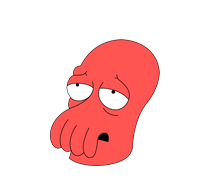

Мы издаем книги — вы их можете не читать

В топ-100 Zoidbergzon.com
в разделах «Это правда было так»
и «Когнитивный писсонанс»

Эта книга доказывает ничтожность человеческой массы.

В книге чувствуется безысходность и бесполезность
В топ-100 Zoidbergzon.com
в разделах «Это правда было так»
и «Когнитивный писсонанс»
Книга неправильно переведена на двоичный код

В каждой книге магнит, который вытягивает вашу мелочь
Наши цены самые непредсказуемые и формируются нашим уборщиком Скраффи
Самое незаметное издательство
Перетаскивайте книги ниже с места на место. Это то, чем мы любим больше всего заниматься. Попробуйте, вам понравится.
Краткая история почти ничего.
Эта книга — недоразуменье.
Все знания о вселенной
компактно упакованы на одной странице.
Автор подробно, всего двумя фразами,
объясняет все.
Двоичные
размышленияо жизни после пресса.